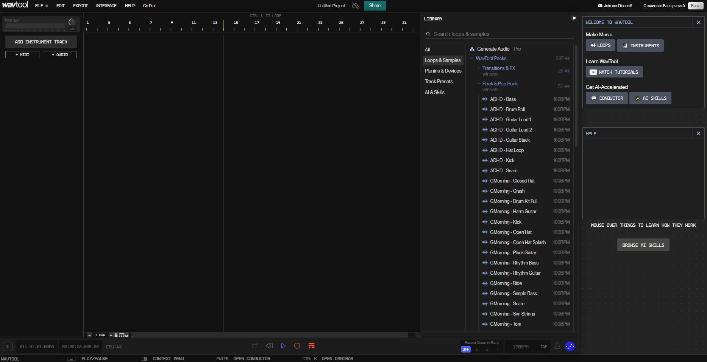

WavTool
WavTool - это веб-браузерная DAW с расширенным AI-функционалом, способным также, преобразовывать текст в музыку. Сервис включает в себя чат-ассистента AI, который может генерировать музыкальные инструменты, управлять параметрами эффектов, а также выполнять ряд других действий в рамках DAW.
DAW - электронная или компьютерная система, предназначенная для записи, хранения, редактирования и воспроизведения цифрового звука. Предусматривает возможность выполнения на ней законченного цикла работ, от первичной записи до получения готового результата.
